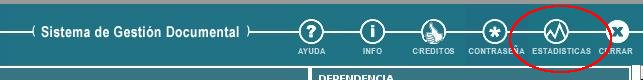
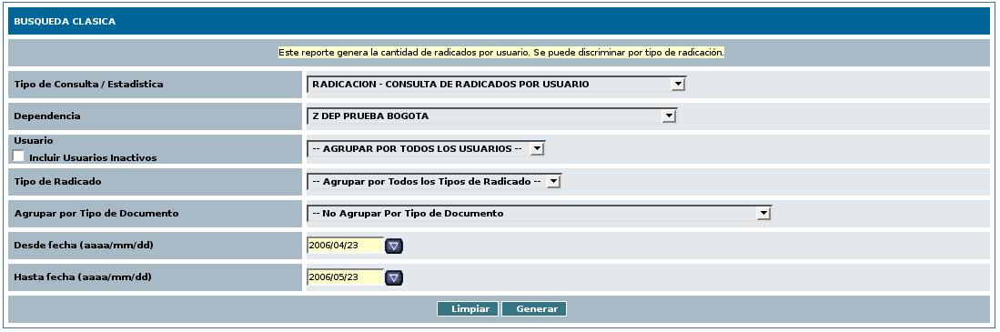
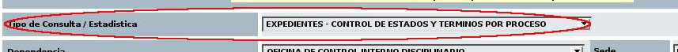
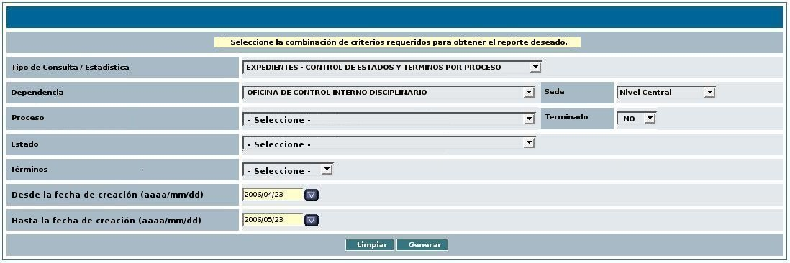

1. A:
INICIO - Selecciona el botón "ESTADISTICAS"
de la barra de título.

2. S:
El sistema presenta la vista de generación de estadísticas
en el formulario de selección de criterios de consulta
predefinido.

3. A:
Selecciona la opción "EXPEDIENTES – CONTROL DE ESTADOS
Y TERMINOS POR PROCESO" de la lista desplegable “Tipo de
Consulta / Estadística”.

4. S:
Presenta una vista que muestra los siguientes campos (ver validaciones):

4.1. Una
lista desplegable rotulada como “Tipo de Consulta /
Estadística”
con la opción "EXPEDIENTES – CONTROL DE ESTADOS Y
TERMINOS POR PROCESO" seleccionada y que al desplegarse
muestra las opciones de tipos de reportes que el sistema puede
generar mediante este módulo.
4.2. Una
lista desplegable rotulada como “Dependencia” que por
defecto muestra la dependencia a la cual pertenece el usuario
actual y que al desplegarse muestra la lista de las dependencias
parametrizadas en el sistema.
4.3. Una
lista desplegable rotulada como “Sede” que por defecto
muestra la sede de la dependencia a la cual pertenece el usuarios
actual y que al desplegarse muestra la lista de las sedes
parametrizadas en el sistema.
4.4. Una
lista desplegable rotulada como “Proceso” que por
defecto muestra la opción
“-Seleccione-” y que al desplegarse muestra la
lista de los procesos parametrizados para la dependencia actual.
4.5. Una
lista desplegable rotulada como “Terminado” que por
defecto muestra la opción “NO”
y que al desplegarse muestra adicionalmente la opción “SI”.
4.6. Una lista desplegable
rotulada como “Estado” que debe mostrarse śolo si
la opción seleccionada por el usuario, de la lista
desplegable rotulada como “Terminado” es igual a “NO”.
Si se cumple este caso, esta vista muestra por defecto la opción
“- Seleccione -” y al desplegarse muestra las opciones
de .estado parametrizadas para el proceso seleccionado en la lista
desplegable rotulada como “Proceso”.
4.7. Una lista desplegable
rotulada como “Términos” que muestra que por
defecto la opción “-Seleccione-” y que al
desplegarse muestra las opciones:
4.7.1. “En términos”
y “Fuera de términos” si la opción
seleccionada en la lista desplegable rotulada como “Terminado”
es igual a “SI”.
4.7.2. “Atrasado” y
“Al día” si
la opción seleccionada en la lista desplegable rotulada
como “Terminado” es igual a “NO”.
4.8. Un combo calendario que
muestra la fecha de un mes anterior a la fecha de hoy.
4.9. Un combo calendario que
muestra la fecha de hoy.
4.10. Un botón rotulado
como “Limpiar”.
4.11. Un
botón rotulado como “Generar”.
5. A:
Selecciona los criterios deseados de acuerdo al reporte que quiera
obtener.
6. S:
Presenta una vista con el resultados de la consulta solicitada por
el usuario en forma de reporte con las siguientes características
6.1. El
título “Reporte de Expedientes”.
6.2. Un
mensaje de confirmación de la búsqueda que puede ser
según el resultado:
6.2.1. “No
hay resultados para los criterios de búsqueda indicados por
usted.” en caso de no encontrar registros asociados a los
criterios seleccionados por el usuario
6.2.2. “Expedientes
del proceso XXX” reemplazando “XXX” por el nombre
del proceso seleccionado en la
lista desplegable rotulada como “Proceso”.
6.3. Los
registros correspondientes al resultados de la búsuqeda (si
los hay) mostrado en filas que corresponden al registro del
expediente encontrado de acuerdo a los criterios seleccionados y
columnas que en su respectivo orden corresponden a los siguientes
campos:
6.3.1. Número
de expediente.
6.3.2. Creado
por
6.3.3. Dependencia
6.3.4. Estado
(si los procesos que se muestran no han terminado).
6.3.5. Términos
6.3.6. Fecha
de creación - FIN